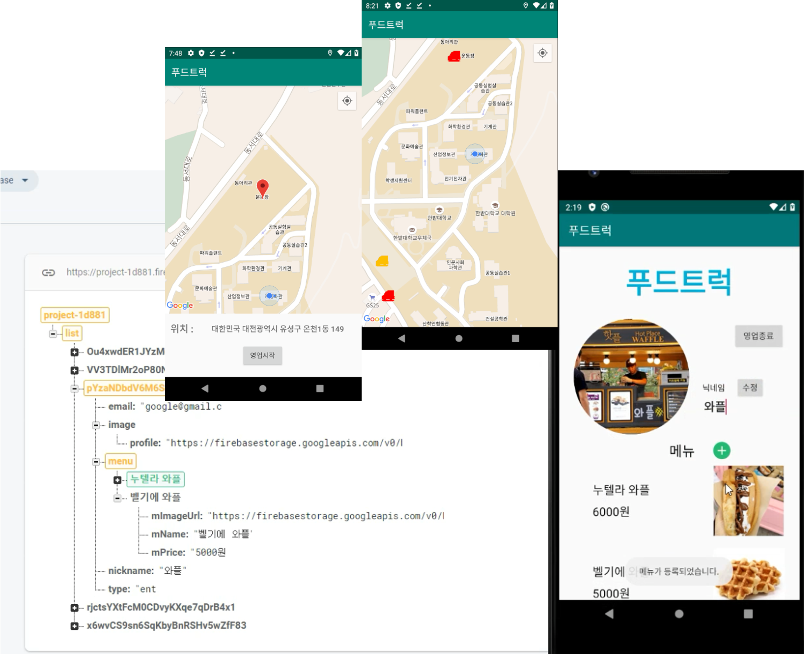
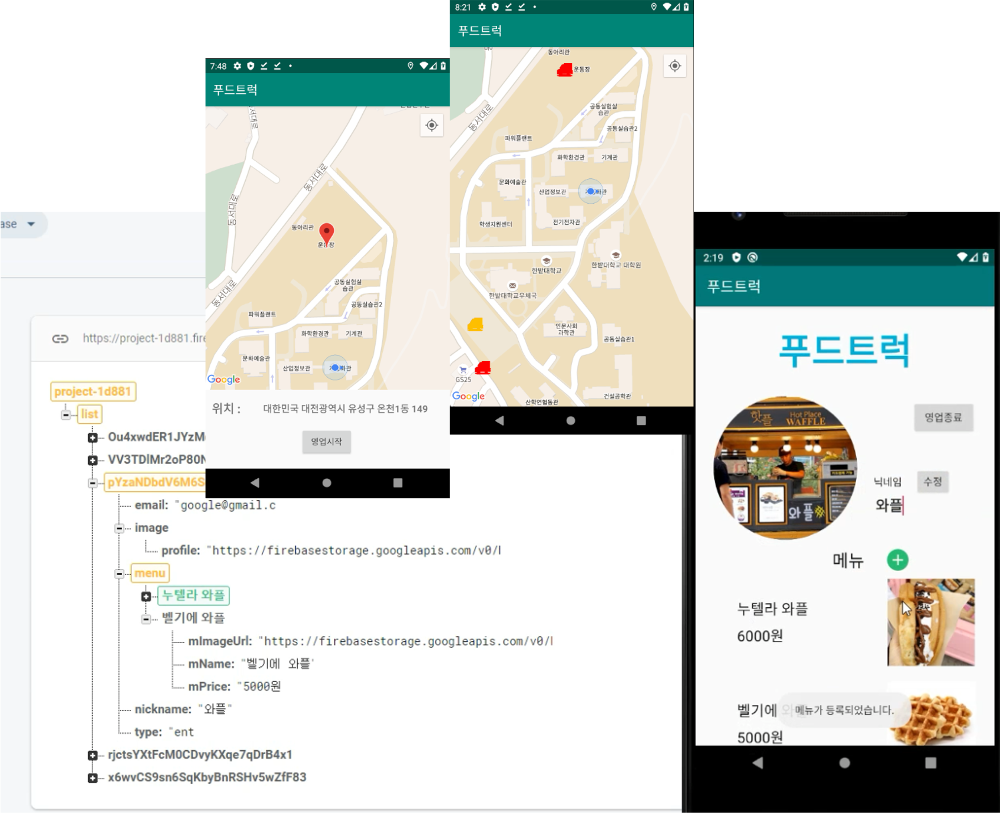
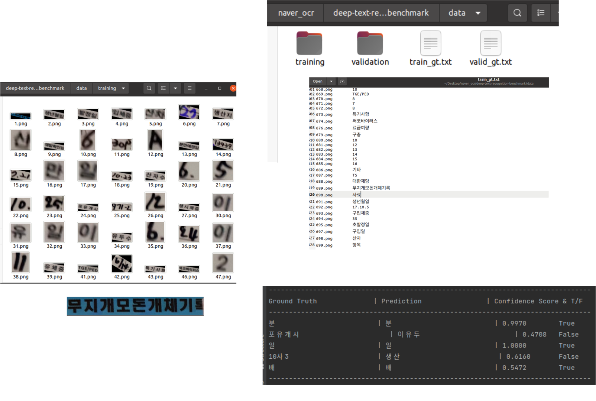
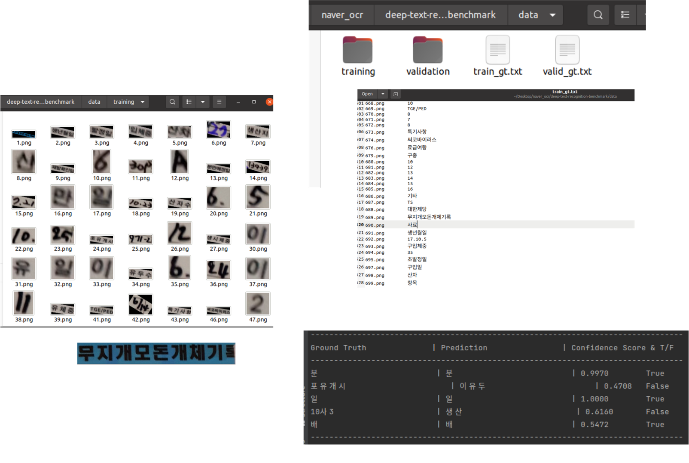
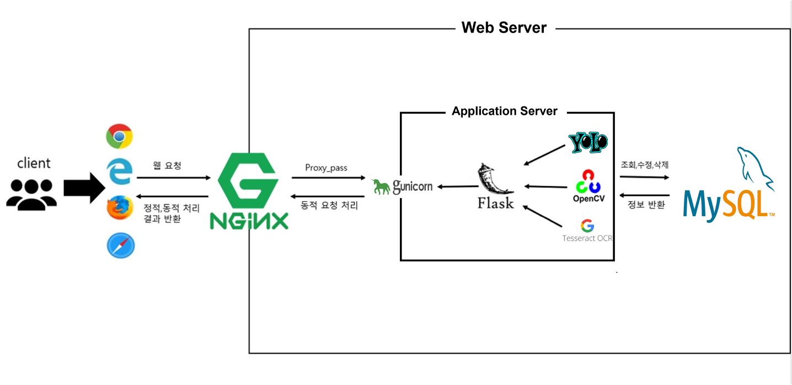
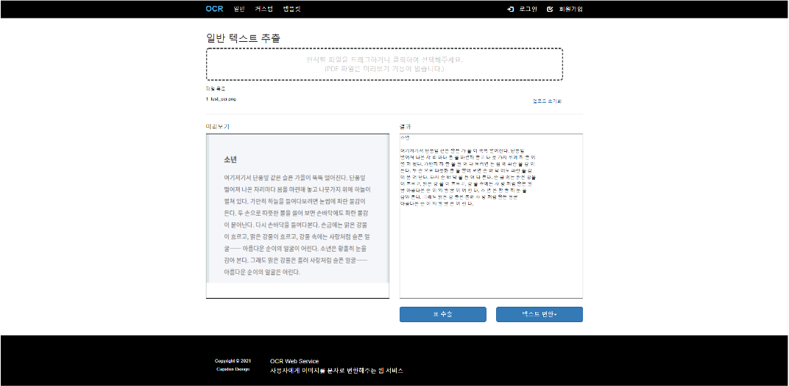
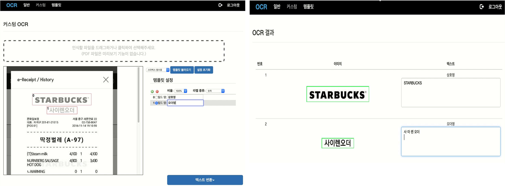
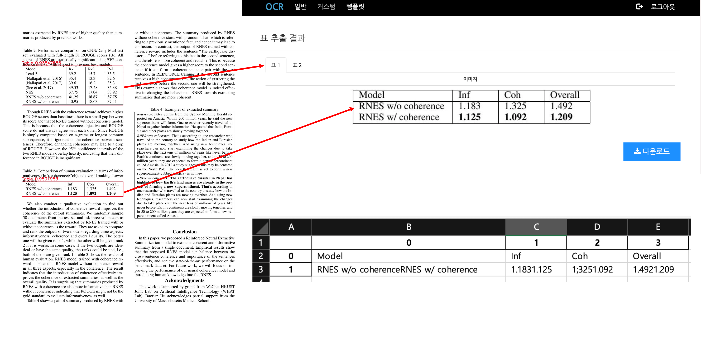
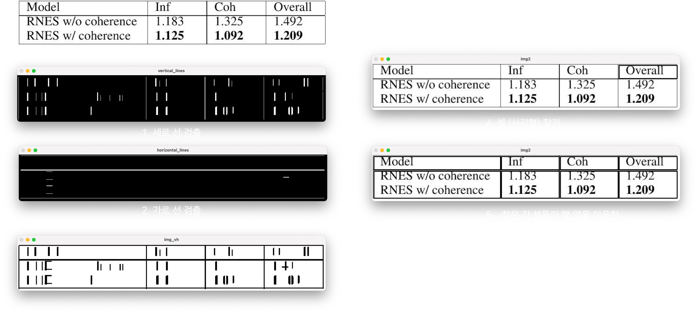

My Work
Android Application
Food Truck APP
푸드트럭 접근성 향상을 위한 어플.
- Firebase
- Android Studio
- Java
배달 위주의 배달 어플 같은 경우 이미 많은 사용자들이 이용하고 있습니다. 하지만 한 위치에 고정적이 아닌 유동적으로 장사를 하는 푸드트럭의 경우 해당 이유로 배달 어플에 등록하기 어려웠고 소비자 역시 접근하기 어려웠습니다.
푸드트럭 어플은 사업자가 소비자에게 메뉴, 위치 등의 정보를 제공하고 접근성을 높이기 위해 제작 되었습니다.
Firebase를 통해 사업자, 소비자 정보를 관리합니다.
푸드트럭 사업자에게 사업 등록, 프로필과 메뉴 등록 그리고 영업 위치 등록을 통해 소비자에게 자신의 푸드트럭을 소개 할 수 있습니다.
소비자는 지도를 통해 운영중인 푸드트럭 위치를 확인하고 해당 푸드트럭에서 판매중인 메뉴, 리뷰를 확인 할 수 있으며, 리뷰를 작성 할 수 있습니다.
또한 즐겨찾기 기능을 통해 해당 푸드트럭에 대한 위치를 실시간으로 확인 할 수 있습니다.

 

Video Calling APP
화상 채팅 어플.
- Firebase
- Android Studio
- PeerJS
- HTML
- Java
웹 애플리케이션과 사이트가 중간자 없이 브라우저 간에 오디오나 영상 미디어를 포착하고 마음대로 스트림하는 WebRTC 기술을 이용하여 화상채팅이 가능하도록 만든 어플 입니다.
Computer Vision
드론을 이용한 주정차 단속 프로젝트 ( 한이음 입상 )
딥러닝 모델을 이용하여 차량과 번호판을 검출.
- YOLOv3
- OpenCV
- OCR
- C++
- Python
기존 주정차를 단속하는데 있어서 카메라가 설치된 차량을 직접 운전, 사람의 확인을 통하여 단속이 이루어졌습니다. 해당 프로젝트는 도로 상황에 영향을 받지 않고 좀 더 빠르고 효율적인 단속을 위해 드론과 인공지능을 이용하여 주정차를 단속합니다.
드론의 카메라를 이용하여 서버에 영상을 전송, YOLOv3를 이용하여 자동차, 트럭, 번호판을 검출 할 수 있는 모델을 만들기 위해 데이터 수집, 정제, 라벨링 작업을 거쳐 딥러닝 모델을 개발하고 이를 이용하여 차량을 검출하고 해당 정보를 취득합니다.
이후 차량의 번호판을 OCR 기술을 이용하여 번호를 인식하고 DB에 저장. 주정차를 관리 합니다.


Smart Farm
인공지능을 이용한 돈가 돼지들을 검출, 추적 관리.
- YOLOv5
- OpenCV
- Python
- Flask
- HTML & CSS & JS
많은 분야에서 인건비, 효율적인 관리등을 위해 인공지능을 이용, 대체하고 있습니다. 그 중 돈가에서도 인공지능을 이용하여 돼지들을 효율적인 관리를 위해 해당 프로젝트를 진행하였습니다.
YOLOv5를 이용하여 돼지들을 검출할 수 있는 모델을 학습, 검출합니다.
Flask를 이용하여 돈가에 설치된 영상을 송출 함과 동시에 딥러닝 모델과 deepsort 알고리즘을 이용하여 검출된 돼지들을 tracking 합니다.
Ajax 통신을 통하여 원하는 돼지 객체의 번호만을 추적 할 수도 있습니다.
PC, 스마트폰, 태블릿 PC 등 접속하는 디스플레이의 종류에 따라 화면의 크기가 자동으로 변하도록 반응형 웹으로 제작 되었습니다.


Smart Farm
OCR을 이용한 돈가 기록표 관리.
- clovaai/CRAFT
- clovaai/deep-text-recognition
- OpenCV
- Python
돈가에서 돼지들의 개체 기록표는 아침마다 돼지들의 상태, 현황을 체크해주고 관리 해줘야합니다.
이렇게 매일 반복되는 작업임에도 아직까지 수기로 작성하고 확인하여 컴퓨터에 받아 적는 과정을 반복하고 있습니다. 해당 시간동안 소모되는 인력과 시간을 줄이기 위해 OCR을 이용하여 효율적으로 관리하기 위해 해당 프로젝트를 진행하였습니다.
clovaai CRAFT 모델은 문자를 검출 할 수 있습니다. 다만 이렇게 검출된 문자를 인식하기 위해서는 recognition 모델이 필요합니다.
모델 개발하기 위해 앞서 CRAFT를 이용하여 학습에 필요한 문자들을 검출하고 수집, 라벨링 작업을 거칩니다. 이후 clovaai의 deep-text-recognition 모델을 이용하여 학습을 진행합니다.
OpenCV를 이용하여 이미지에서 표의 라인을 인식하고, recognition 모델을 이용하여 문자들을 변환하고 관리합니다.
 

Capstone Design
웹을 이용한 문서 OCR 서비스
- YOLOv5
- OpenCV
- OCR
- Python
- Flask
- HTML & CSS & JS
- Nginx
- MySQL
기존 OCR 소프트웨어 프로그램은 대부분 유료 라이센스를 구매하거나 사용자 PC 사양(처리속도, 저장공간)등이 성능과 영향이 있었습니다.
또한 웹 서비스 같은 경우 무료로 접근성이 프로그램에 비해서 제약이 적고 접근성이 좋았지만, 문서 전체만 변환하는 기능만 제공하고, 한글을 미지원 하는 등 기능적인 부분에서 많은 아쉬움이 있었습니다.
캡스톤 디자인으로 진행된 웹을 이용한 문서 OCR 서비스 프로젝트는 이러한 웹 서비스의 접근성을 살리면서 사용자들이 사용하는데 있어서 유용한 기능들을 제공합니다.
저희 프로젝트는 유저가 브라우저를 통해 url로 웹사이트에 접속을 하면 Nginx(엔진엑스)가 정적파일(html,css,js로 이루어진)을 브라우저로 전송을 해줍니다.
웹사이트에서 발생되는 동적이벤트들(사용자 정보, 버튼을 눌렀을때 변하는 부분,OCR 등)은 ajax(에이잭스)를 통해서 gunicorn(구니콘) 이라는 WAS(web application server)에 요청을 하고 로직 처리후 값을 반환 받게 됩니다.
WAS에서 사용자 정보 생성, 조회등과 같은 정보는 DB서버에 쿼리를 해서 값을 반환 받게 됩니다.
OCR 엔진으로는 Tesseract의 OCR 엔진을 사용하는데 기존 Tesseract에서 제공하는 한글 모델의 경우 영어에 비해서 좋지 못한 인식률을 보여주었습니다. 해당 문제를 해결하기 위해 뉴스기사, 노래 가사등을 크롤링을 통해 정제하고 LSTM 학습을 통해 인식률을 개선 시켰습니다.
회원 비회원 모두 이용 가능한 문서 전체 OCR 기능을 지원합니다. 텍스트로 변환하고자 하는 pdf,이미지 파일을 업로드 후 전체 텍스트 변환을 통해 변환된 텍스트 파일을 Ajax를 통해서 반환 받아 화면에 출력하게 합니다.
커스텀 OCR은 회원에게 제공되는 기능입니다. 일부 사용자에게는 문서 전체의 텍스트 정보를 얻기 보다는 원하는 위치에 있는 내용만을 변환하고 싶어 합니다. 저희는 이러한 사용자들을 위해서 사용자가 영역을 직접 지정을 하여 해당 영역만을 잘라 텍스트 변환을 제공합니다.
텍스트 변환 버튼을 통해 사용자가 지정한 영역의 원본과 텍스트로 변환된 결과를 함께 출력하여 수정 및 저장하는 기능을 제공합니다.
동일한 문서를 여러장 처리하는데 있어 용의하도록 해당 영역을 지정후 저장하고 이를 불러와서 재사용 할 수 있는 템플릿 기능도 함께 제공하고 있습니다.
텍스트 변환하는데 있어서 표가 있는 문서는 표의 선과 형식으로 인해서 원하는 정보를 정확히 얻어 낼 수 없습니다.
이를 해결 하고자 YOLOv5 를 이용한 표를 검출할 수 있는 딥러닝 모델을 직접 학습시켰으며 문서에서 표를 검출 할 수 있도록 하였습니다.
검출된 표를 OpenCV를 이용한 영상처리 작업을 거쳐 표의 셀들에 대한 정보를 얻어내고 텍스트 변환, Excel 형태로 저장하여 완벽하게 표에 대한 정보를 가져올 수 있습니다.
전체 구성도 
한글 데이터 정제, Tesseract LSTM fine-tuning

전체문서 OCR 
커스텀 OCR 
YOLOv5 Table Detection 
OpenCV Table Cell detection 
About Me
한밭대학교 컴퓨터공학과 재학 중 ( 2016.03 ~ )
수상 내역
한이음 ICT 멘토링 입상 (2020.)
제 1회 창의혁신 캡스톤디자인 경진대회 창의상 (2020.)
연구 분야
영상처리, 인공지능